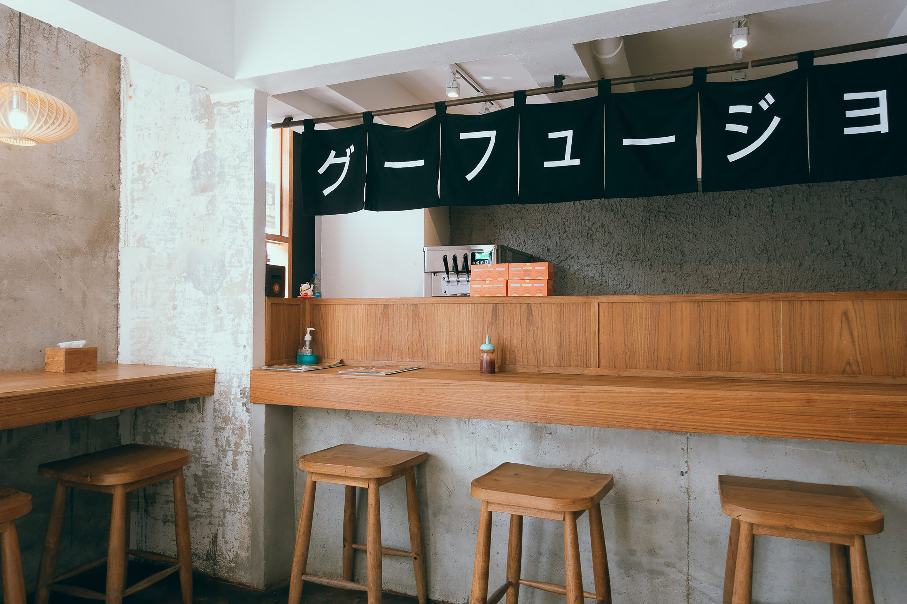
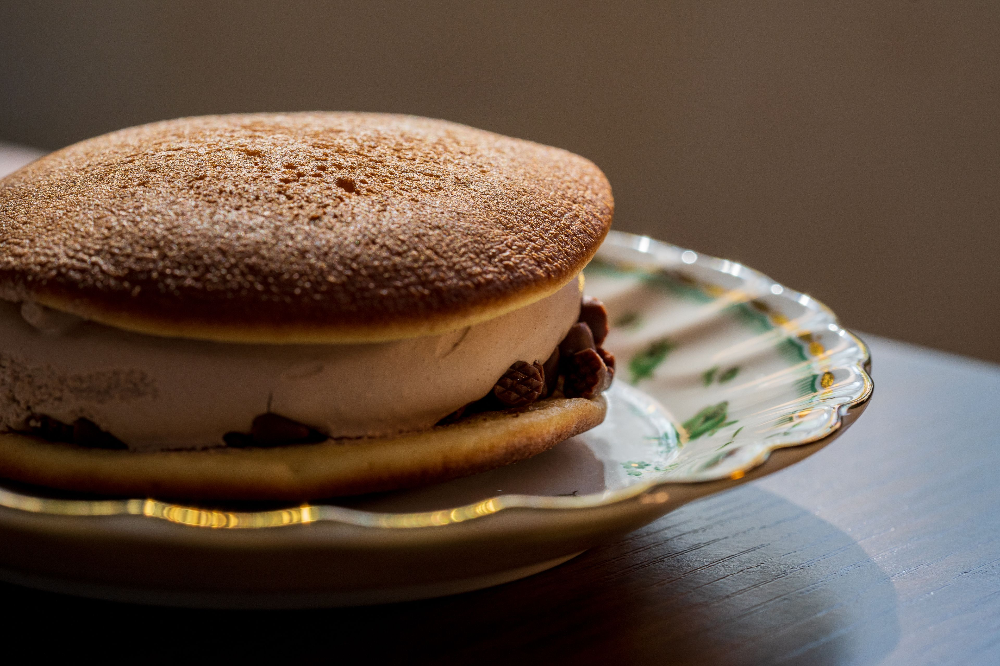
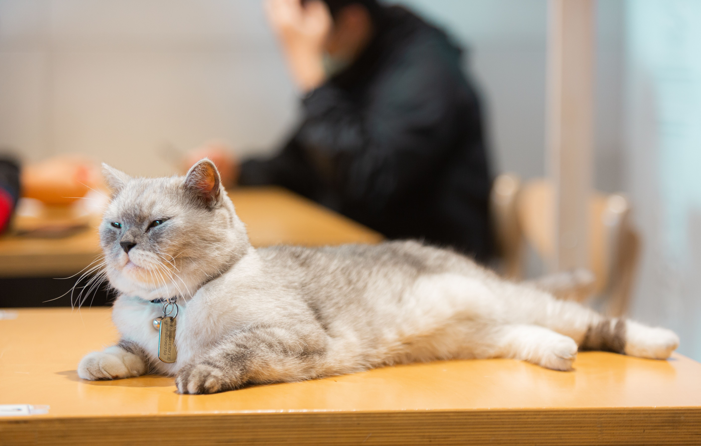

Bienvenido a Neko Coffee

Neko Coffee es una cafetería de inspiración japonesa donde el aroma del matcha, el sonido suave del koto y la compañía de nuestros gatos residentes se combinan para crear un rincón de tranquilidad en medio de la ciudad.
Inspirados en los kissaten tradicionales de Japón y en los cat cafés de Tokio, ofrecemos bebidas de té y café preparadas con calma, postres artesanales y un espacio pensado para desconectar.
¿Qué encontrarás aquí?
- Bebidas japonesas: matcha, hojicha, yuzu y café de filtro
- Postres tradicionales: dorayaki, mochi, taiyaki y castella
- Un ambiente inspirado en los cafés de gatos de Japón
- Pedidos para llevar a través de nuestra página de Pedido
Horario de atención
Lunes a Domingo: 8:00 a.m. — 9:00 p.m.
Galería destacada


Puedes ver más fotos en nuestra Galería.